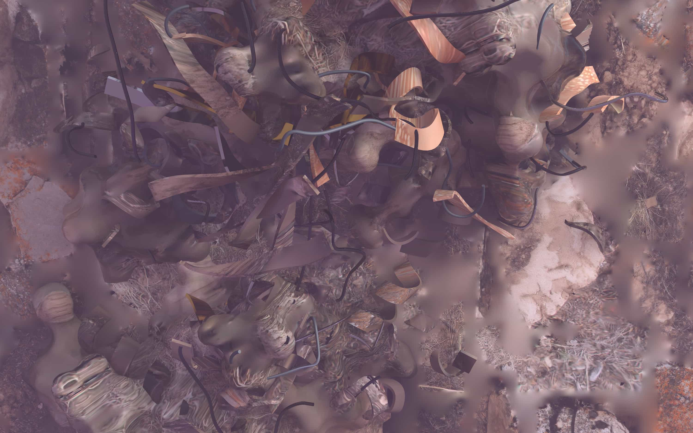
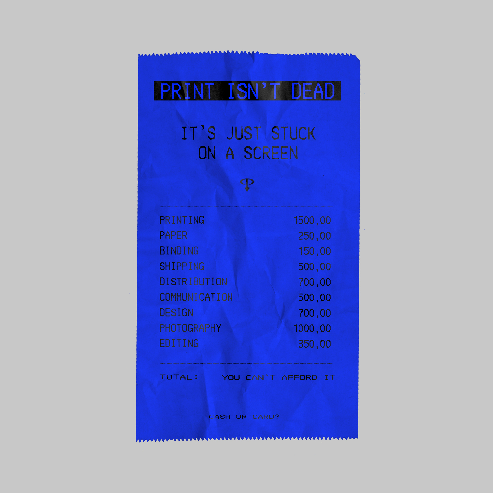
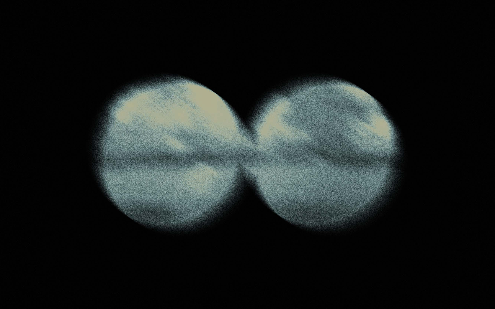
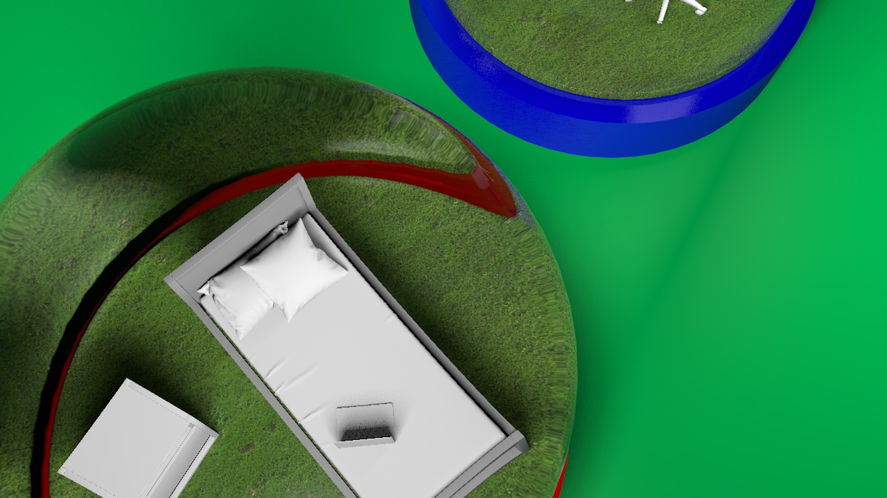
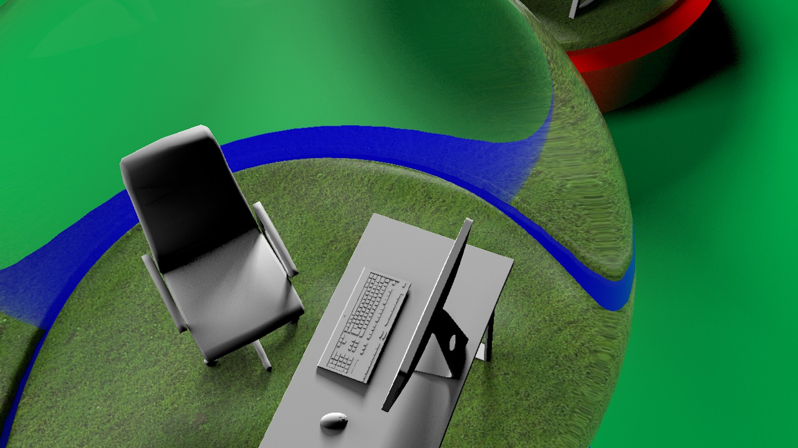
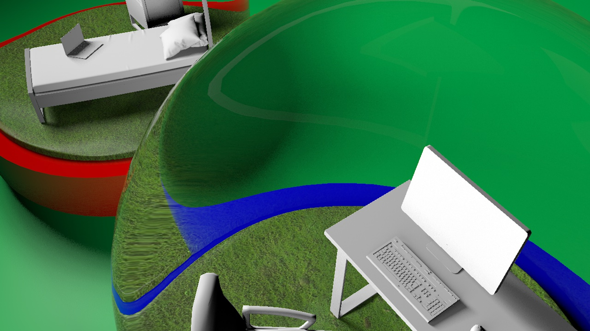
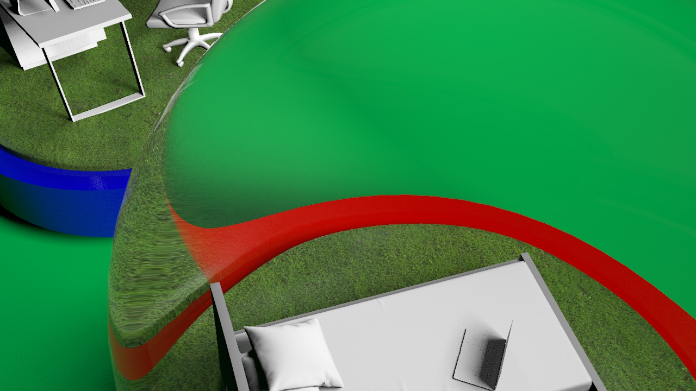
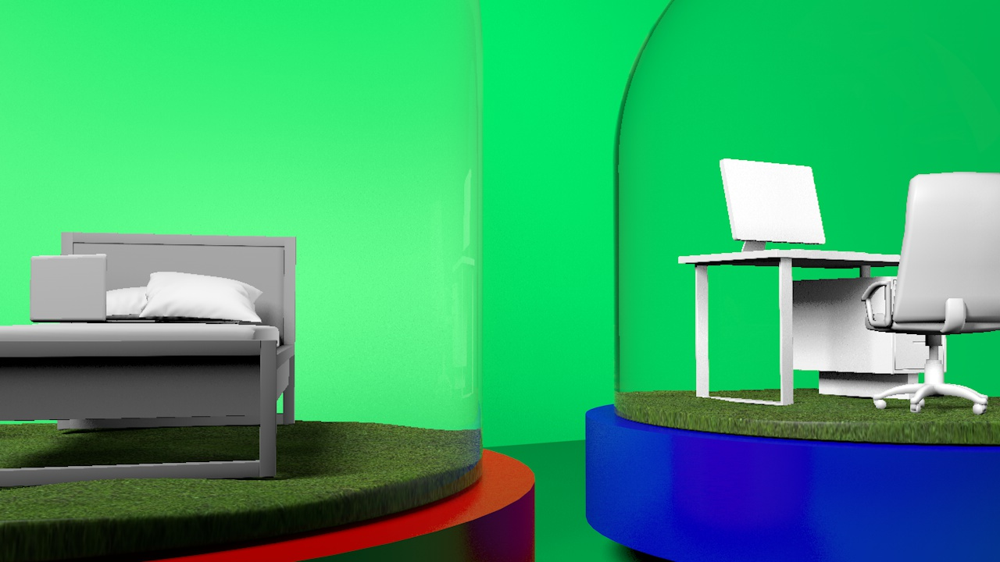
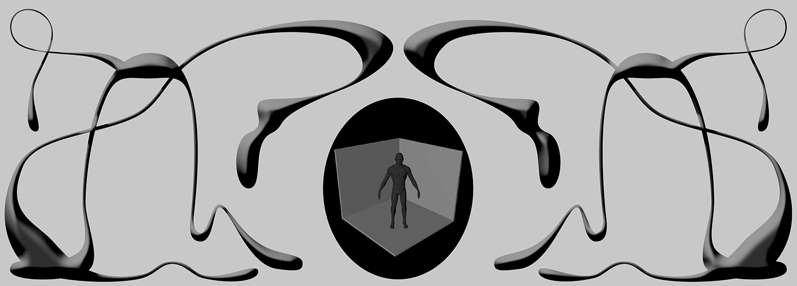
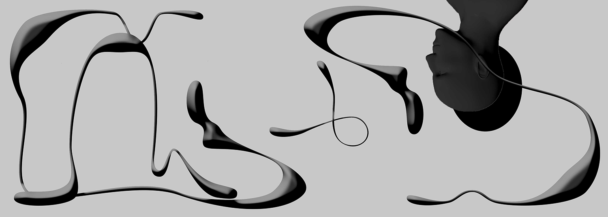

In the aftermath of the coronavirus pandemic, we face change and designers have the chance to re-orchestrate the ways digital, biological and human ecosystems interplay. In lockdown, we have the opportunity to glimpse the world we inhabit from a marginal perspective. Can this peripheral position constitute the adequate point of view to discern post-anthropocentric design approaches?
Consume less plastic. Plant a tree. Reclaim your data. Travel less. Stay at home. Don’t visit friends. Wash your hands. Keep your distance. Don’t touch anybody. We have been raised in neoliberal accelerationism, buying individualised solutions to all our shared fears. Most big issues of this world have been scaled down to the action of that man, a super strong-willed man, that could change the world with a Stanford degree, indoctrinated with a “make a difference” slogan t-shirt and an entrepreneurship summer course.
The present crisis has set us again atomised in our computer rooms, connected by the network. Yes, this pandemic has shown again how profoundly interconnected we are. Locked inside, we look for information, we look for numbers and facts. We get distressed in no time. We dive into group chats, attend virtual exhibitions, house parties and yoga classes, visit online archives, laugh at memes, travel on street view and watch loads and loads of tv shows. 24/7. All of these activities veil the grief surrounding us. Beyond any personal experience, this collective experience, this common ground is changing us. Change is happening at different scales and layers. In this suspended act, we may enrol on simulations of our cancelled “normal”, question the dysfunctional systems that have brought us here or look for other ways of coexisting: between humans and non-humans.
The idea of a human-less world went viral when fake news brought dolphins and swans to swim and dance on Venice canals. The fiction continues on our instagram feeds with pictures of evacuated streets: such apocalyptic scenarios. In my backyard, my neighbour’s rooster crows all day, unaffected by the expedient hours. It’s the end of the world, Timothy Morton whispers. Bifo adds: It’s the end of human history. As reported last week, the silenced urban landscape is slowly allowing seismometers to detect another layer of signals of volcanic and seismic activity: we can hear the Earth better. The suspension of flights across Europe have decimated pollution and carbon emissions, the skies got cleaner: we can see the Earth better.
Detached, in this quiet landscape, we see the world we inhabit without us. Besides the signs of an apparent suspended environmental apocalypse, we see how our lives are intertwined with other machines. Our basic needs, dependent on automated services that bring us food home. Our social life, mediated by computer communication. Our professional lives, zoomidified. In this unequalled situation we are not in the centre of the stage, we take a secondary role while machines pursue their activity regardless and nature reveals itself.
A friend asked me on WhatsApp the other day: what can we do as graphic designers? We joked: posters 1. Again, we have the chance to avoid reiterating the same individualistic and self-perpetuating rhetorics that have brought us here. From increased acceleration to forced degrowth, from the centre to the margin: can this peripheral position constitute the adequate point of view to discern post-anthropocentric design approaches? On that note, some months ago, before the pandemic hit in Europe, I came across Johanna Schmeer’s Xenodesignerly Ways of Knowing. Schmeer proposes a design paradigm that can operate as an alternative to the predominant human-centred design approach. Following Timothy Morton’s understanding that humans, animals and things are interwoven, Schmeer’s proposal advocates an understanding of all entities on an equal level: human, ecologies, bacteria, air, soil, artificial intelligences, etc. In such rhizomatic systems, the bodies do not revolve around one part. Instead of addressing the user’s needs, the designer includes in the equation the “other” — human or other-than-human — that might be affected by a given object.
With our ears on the ground, interconnected, we can use this transition, this hybrid space, to imagine and discuss this and other design approaches that might define our co-existence on the post-pandemic crisis. Without forcing directions yet opening doors, we must look out for design approaches and systems that, for a change, un-centre us from the process.
NOTES
1As an example visit stay-sane-stay-safe, an on-going online platform which archives posters with Stay-at-home-like messages: Stay Home, Wash Your Hands, etc. To trigger designers to submit work, the authors of the project ask rhetorically: Did you know you’ve got some superpowers? The work force behind this project is immense: the platform counts 1016 contribution at this very moment.
REFERENCES
Schmeer, J. (2019). Xenodesignerly Ways of Knowing. Journal of Design and Science. Retrieved here.
Salema, Isabel. (2020). O silêncio da covid-19 deixa-nos ouvir melhor os sismos. Jornal Público. Retrieved here.
Berardi, Franco. (2020). Beyond The Breakdown: Three Meditations On a Possible Aftermath. E-flux Journal. Retrieved here.
Gardiner, Beth. (2020). Pollution Made The Pandemic Worse But Lockdowns Clean The Sky. National Geographic. Retrieved here.
Joana Pestana is a designer and lecturer at ISMAI and Kingston School of Art. She is interested in the relations between new literacies, their embedded rituals and ideas, and design.

It’s that time of the year again. The yearly debacle may commence. The one and only conversation where non-creatives join sides with creatives to spill their best insights other than “Make it pop” and “Gecko green is my favourite colour”, they aren’t always the wisest insights but it’s a way of reasoning to pay you minimum wage as every headline says your profession is dying. Once again.
And the mythical question is:
How dead is print in 2020?
We’ve been chanting the same mantra for a few decades now, and the newsflash is, print is still alive and thriving although in more subtle ways, catering to the enthusiasts and the collectors, taking more refined approaches with a level of intricacy that couldn’t be achieved if it were to be produced for the whole wide world.
Print and digital media become entangled as the options become far greater than “e-pub” or “p-pub”, offering a whole new hybridized medium of both publishing and consuming. Yet, this question is never over and it will probably never be, as it continues to fuel the industry in a profitable way, a quality that independent publishers have never had. And as the post-pandemic state approaches (hopefully), so do the endless stream of headlines stating that newspapers and magazines will go out of business if they don’t make “the shift”. But for the community of small to mid-size designers and creative houses, that isn’t really a question as we never had the ability to mass print because of its elite-like requirements.
Publishing has taken advantage of a sense of liberation that the fluidity between mediums— as technology loses its novelty charm—can provide, resulting in new and emergent practices that aim to democratize access to print and publishing for those who couldn’t have that privilege. On the other hand, the zine format brings new voices and practices into the spotlight, which serve as collaborative platforms that aim to bring creatives together, enabling a print on demand approach that urges to cut costs at the same time that adds value and exclusivity to an item.
And in these times we encounter ourselves in, publishing is not a privilege but an urgency. It has become a necessity to document the world as it presents itself now and how we fit in this narrative. This can only be done through several perspectives, as no one is experiencing the exact same pandemic reality.
As the world shuts down and stands still expecting the blow to soften, the act of creating and publishing suffers from an hyper-acceleration phenomenon—a consequence of physical constraints that force a migration to the digital realm.
And when it comes to digital publishing, everything is fast-paced, hassle free, with a heavy delivery and impact that can act in a matter of minutes. As the major magazines and newspapers of this world take a step back, independent projects and publications rise to the front in full force displaying their craft in full blown glory as, maybe for the first time, the world watches in awe because honestly there isn’t nothing better to do. And because watching creatives full of opinions and feelings become engrossed in a hyper-accelerated creative daze as everyone else simply stops moving, is the most entertaining thing we can do right now as other major sources stop publishing.
In Post Digital Print (1894), Alessandro Ludovico mentions Andre Breton, a founding father of surrealism publishing, that claims “one publishes to find comrades”. Creators publish to bring together those who think alike (and those who might), to establish a connection and a community, to create an ideological space for those who want to consume and contribute. In the time we encounter ourselves in, it is imperative to foster a sense of community, and the one creators have established becomes relatable, as the whole world shares a collective experience that is being documented. Digital intimacy and closeness create the idea of a widespread connection, which brings independent projects and designers to the forefront leaving major companies in the back, as the concept of a corporation is not relatable in any way right now, as it cannot bond with the human experience.
Collaboration is right now also the name of the game, as the common goal becomes documenting as much as distracting ourselves and the others. The design community tightens in times like these bringing to life a handful of collaborative platforms and digital events in which a learning and contributing environment is encouraged.
In the digital realm, things really do become different, and almost utopian, as the visibility of power dynamics suffer from a drastic change and erasure. But as publishing and dissemination suffer from an obligatory and semi-exclusive digital presence, and as that same exclusivity seems to foster new ways of thought and practice as well as balance for independent practices, isn’t it safe to say that maybe digital is the new absolute medium as it is cost-free, brings equity to the table and helps to build community and togetherness? And most importantly, Is it really time to throw the towel and let those who want to cut our paychecks in half (or into nothing really) have a say in our industry? Honestly, the answer seems to remain a big fat “No”.
Although the digital space as a dimension offers new expansions and possibilities, which are very valid and definitely have something to add to what we already know, it doesn’t mean that this medium restriction limits the final outputs to only digital oriented ones. The desire for print objects is still here and it is obvious. There is a wave of print nostalgia and affection in these small communities that are now being put on the spotlight.
Despite the lack of means to adequately print physically or the impossibility of real life circulation, that is characteristic of more underground projects tied to certain subcultures—especially those who rely on the independence factor of the DYI—creators are making it work one way or another.
There is an intention to emulate print-like qualities and its aesthetic through digital tools. Although most of these objects aren’t leaving their .psd file cluster or their instagram frames, they don’t look or mean to be exclusively digital. Instead of embracing everything that this limitation brings and resolving it, people are finding ways to work around it. From poster and card-like formats, to heavily textured and gritty aesthetics, there is a will to bring some sort of physical resemblance to the confinement of our screens.
In the true fashion of post-digital production, print is not being forgotten but rather being re-appropriated. As reality shifts, so do the means of production, and as we adapt to our confined spaces we start to see the potential of the mundane objects around us as a resort. We don’t print now, we scan. Everything can be made into an enclosure, a wrapping, a book or a sticker. These little signifiers of our daily and physical lifes can now be brought to our computers through other alternatives.
Designers don’t seem too interested in subscribing to a desktop shaped way of thinking. Instead, nostalgia inducers are being brought back, maybe as a way to reclaim a past where the digital realm represented just a glimpse of our lives and not our entire existence. This retro tear-jerker ranges from floppy disks, CD ROMs, VHS tapes to GameBoy Cartridges who have their formats appropriated to take on a whole other meaning. They become almost pièces de resistance, and their appropriation has a cultural significance that indicates a hybridized way of post-digital print.
Times like these really do test our ability to communicate and create, but for designers a lack of the physical world doesn’t mean the ultimate death of the physical object, but rather a different take on its production and exhibition—and also a boost on its rare and exclusivity status. Instead of killing it, this limitation sought to open other doors where fluidity between digital and print could become more seamless and less forced by the tides.
Design isn’t really one or the other anymore, it can’t survive like that. The digital realm provides a widespread circulation that can’t be reached in any other way, and even those who resisted against it and stuck to word of mouth within its small community, have no other choice now. It also fosters a connection that simply couldn’t exist in the physical world restrained by geographical matters, and honestly, status quo too. In that sense, this medium of disseminating and connecting is unbeatable, but it also lacks the organicity, the touch and the personality that a screen just cannot provide.
This was a test for post-digital matters, and although a terrible time for the world, it has been a breeding ground for future publishing practices that cannot be reversed. Maybe it is an utopian way of thinking, but this independence from the medium can also mean growth for self-publishing that can finally be appreciated by a wider audience.
It is exciting to see and speculate on how the projects and communities who were brought together by this pandemic will grow in the future, how will they defy the medium subverting yet again notions of digital vs print. Maybe this will show that corporations' rise and falls don’t constitute the death of a medium and that digital and print doesn’t mean a war but a collaboration. And when these notions hit the general public, maybe the question which shall not be asked will be permanently forgotten.
REFERENCES
Ludovico, Alessandro. (1894). Post-Digital Print: The Mutation of Publishing since 1894. Onomatopee 77.

It has been a challenge, almost a frustration, not to think about the consequences that this pandemic may bring to the world, especially to our profession. These conditions may have existed before, but the pandemic has exposed these issues. I am a freelancer at the beginning of my career and I feel all this seems like an endless tide of bad luck—seeing the incredible increase in unemployment numbers worldwide, I am afraid that it will be difficult to find a stable job in the field of design or even develop my freelance career in the upcoming years. For now, the production of content through the perspective of design helps us overcome the uncertainty of contemporaneity.
Design has long been claiming its importance in society, and I think that now, more than ever, is a good time to analyze and possibly redefine that role and improve our critical perspective on society and its systems, especially as citizens. When I think about the moment when we decided to move forward with this project, I remember there were a lot of people talking about productivity and the need to 'do something' for society. An even greater acceleration was launched in a naturally accelerated world when, paradoxically, the world was in a stagnant deceleration. What motivated us was the desire to react to the problem itself as matter of thought and criticism, but perhaps intrinsically and unconsciously we felt this pressure from society to produce something. We even saw at the same time that we took this initiative, the emergence of platforms and zines that focused on this unrestrained production as a kind of statement of “stay home, stay productive”. The problem with this type of cultural production is that, as Susan Buck-Morss stated, in 1997, in Cultural Production And Social Commitment, “cultural production is social commitment”1. That is why we ask ourselves what it means to publish in the context of a pandemic.
One thing that can be concluded is that publishing nowadays is an act that only requires dedication and willingness to produce and say something (to publish it is mainly necessary to be enthusiastic and a good, or even an average, observer of their surroundings). With the free tools and knowledge that we have available today, in a short time, it is possible to publish anything—any individual with the least amount of ambition publishes today: digital culture and its social networks have trivialized the act of 'publishing'. Publishing nowadays means ‘practice’ and not the production of a physical object itself—and it was exactly the urge to practice design in its various disciplines that was felt by us when creating RIFE. We were, in the end, like Paul Soulellis, looking more and more towards critical writing, not visual art, for clues about how to deal with crisis, particularly around failure and futurity 2. To publish in the middle of a pandemic is to provoke discussions, opinions and generate questions about the situation in which we live. It is a need to express points of view based on particular reactions: ours.
I have been thinking about these questions and how they might help me understand our current situation in order to foresee the future of the role of the designer. The conclusion I have reached is that thinking about society and its systems helps me, above all, in my introspection about my professional practice, but also to understand more and even more the importance that the designer can have in the construction of these systems. This is why I believe this moment that gave us space, was not directed towards being productive, but rather to think about our socio-political position and look for ways to reshape the intra and inter-human relationships that we have created up to this point. Although it may sometimes not be clear, designers are also part of this situation and the key moments that led us to it, and the uncertainty of the future is also partly their responsibility.
REFERENCES
1van Toorn, Jan. (2016). Operationalising the Means: Communication Design as Critical Practice. Modes of Criticism. Accessed here.
2Soulellis, Paul. (2018). Publishing as practice as resistance, a talk delivered at a number of venues. Accessed here.
Kaplan, Zachary. (2014). The Accidental Archivist: Criticism on Facebook, and How to Preserve It. Rhizome. Accessed here.
Soulellis, Paul. (2015). Digital Publishing, Unzipped,. NEW INC, at The New Museum Rhizome. Accessed here.
Keywords: design practice, economic recession, creative reset, culture, community, dismeasure.
The debate on how our practice has been affected by the global pandemic and how it may evolve from this experience has been flourishing in online design forums, and a question recently posed by It’s Nice That, «will the current pandemic provide an opportunity for a creative reset?» seems particularly interesting in a time like this, as it reveals a necessity. The wording implies that a reset is not only needed but in fact desired by those in the very industry.
As confirmed this past week, the world is about to witness the worst recession ever, and no country will be spared. As history shows, countries in economic recession are bound to take measures that deeply affect the cultural sectors. Not so long ago, November 2019, we saw the Flemish government announce a 60% cut to culture and heritage, gravely affecting project grants and setting off an array of images from artists and institutions being published as a protest, covering their artwork in yellow by the same sum. During the break-out of the pandemic, many designers engaged in projects to support the community of autonomous creatives. London-based art director Zak Kyes, for example, has set off a movement on instagram amidst lockdowns called culture is not cancelled, urging people to practice social distancing, but not to cancel culture—ultimately creating a forum for creatives to share projects that have been postponed or cancelled altogether due to the pandemic.
Zygmunt Bauman once wrote that «culture only emerges in the face of death» (2008), an argument that strangely resonates in contemporaneity—not in a literality way, but rather a figurative one, interpreting it as the strain the pandemic has imposed on creatives worldwide, worsened by the grim of a recession. Culture thrives in repressive environments, as Latin American dictatorships in the late 1970s and 1980s have proven, with the flourishing of countercultures, music, poetry, theatre and literature. In which case, wouldn't death—meaning the threats that carry the looming recession—be our creative reset?
In No Culture, No Europe (2015), a book edited by professor of cultural sociology at the Antwerp Research Institute for the Arts Pascal Gielen, political and economic crises in the European scenario are analysed from the viewpoint of a concept of culture that is paramount.
Over the past decade, the European Union has been experiencing a drawn out crisis, politically as well as economically. From the debate about this crisis an important element is missing: culture. Culture as a shared frame of reference and as something that lends meaning to people’s lives is not the superstructure but the foundation of all societies. — Pascal Gielen
Faced with the inevitable economic and potentially consequent governance crises, the relevance of a book is striking. In one of its sections, Culture: The Substructure for a European Common, Pascal Gielen and Thijs Lijster (philosopher and art critic) gradually build on an anthropological notion of culture, distancing itself to the common conception of culture as artefact and production—which was referred to in the opening of this article. This anthropological notion is based on the processes of socialisation, qualification and subjectification, which in simplistic terms can be understood as the connection to a culture, the holding of the necessary knowledge and skills to partake in it, and authentication of one’s role in it, respectively. In tandem, these concepts comprise the Gielen’s notion of culture, a «stealth laboratory for new forms of life, an omnipresent incubator, hardly noticed precisely because it is everywhere» (2015: 14), deeply ingrained in society.
From this anthropological concept, Gielen and Lijster expand on the cultural sectors by arguing that creatives who work in the industry are able to guide people to the social order that is taken for granted. They defend that the creative industry can establish hierarchies as well as overturn them, empower people and undermine the social order, or parts of it, even if rarely so. The reason for that being is that artists have «the possibility to spontaneously and triumphantly discuss any subject whatsoever» (Sloterdijk, 2011 as cited in Gielen, 2015).
Gielen and Lijster are particularly focused on the case of the arts, however design can well enough be framed into their notion of culture, for the design practice also reflects, challenges and works within the framework of this very anthropological notion. This great responsibility (and potential) is, for example, perfectly illustrated in Ruben Pater’s The Politics of Design: A (Not So) Global Design Manual for Visual Communication (2016). Design both deals with cultures as well as it is a cultural output in itself, producing artefacts that convey—if well executed—intentional and powerful messages that can «intervene in an existing cultural order and fundamentally transform it» (Gielen, 2015: 32).
Furthermore, Gielen and Lijster put forth the concept of dismeasure, which appears in their notion of culture to question and challenge cultural customs and traditions—a sine qua non of real change, closely tied to the practice of an avant-garde in their theory. In design, this provocative nature is analogous to the critical and experimental tradition of the practice. In terms of dismeasure, it is argued that it is in dissent that culture finds the opportunity to renew itself and reconsider its sources; it is in dissent that a community is shaped, not in consensus (2015: 36). It is important to point out that the community here is not understood in the same manner as you read in the latest design forums, as this harmonious entity central to a more conscious practice, but is rather described by Gielen and Lijster as a space in which discussion and conflict surface in order to bring about a solution. This way, Gielen brings insight into the role and potential of design in navigating a turbulent economic and political landscape.
The coming recession is bound to challenge the very conventions of contemporary society, such as the pace of the global economy—enabled by globalisation—and consumerism—soon shifting towards new sustainable living patterns—, rendering this time optimal for promoting culture (in both senses argued here), contesting traditions and bringing about change. And that is exactly how the practice of design may prove itself relevant and contribute to a debate in the coming period, by assuming a role of an incubator for change.
The economic slowdown first and foremost will hugely affect the acceleration of the creative industry, weakening the spectacle of contemporary «commercial design» focused on brands and individuals. The design industry is constantly being measured through an exhaustive focus on competitiveness, globalisation, corporate advantage, life-style design, differentiation, design strategy, experience design, smart design etc., all to which undermine the potential of the practice—as well as solidarity, weakening citizenship and community spirit (Gielen, 2015). The current scenario of neoliberalism has created a culture in which people are addressed as consumers instead of producers, workers or citizens (Bauman, 1998) and the great recession ahead will make us question and hopefully restructure this dynamic. Neoliberalism revolves around the «atomistic individual», the homo economicus, detached from his cultural, ethnic or religious background (Gielen, 2015: 51), as opposed to the centralisation of community and society proposed by the anthropological notion of culture.
By restructuring this centrality, design might be able to partake in the formation of a more sustainable economy in the times to come, based on a «solid community» (Gielen, 2015)—again, not as in the harmonious entity but rather a place where conflict and debate happens in order to generate change. Design might be able to face this challenge by engaging more in questioning the practice itself. In the same manner Gielen and Lijster argue that «art as the domain where a certain dismeasure is still being cultivated, is one of the few places within modern society where just about every measure (be it economic, political, ethical or medical) can be questioned» (2015: 33), design holds the same potential by means of introducing dismeasure in its critical and experimental approaches.
The centrality of Gielen’s anthropological notion of culture—or alternatively, of community—is paramount for understanding the influence of the introduction of dismeasures in the process of pointing out alternate possibilities by challenging current customs and traditions in times of political and economic adversity. «[…] Effects generated by a socio-cultural sector by introducing a migrant’s culture generate a much larger shift within a culture than a dismeasure introduced in art, mainly because art preferably is confined to the world of fiction therefore seen as inconsequential to real life» (2015: 33). However, unlike the realm of the arts, design is not confined to the imaginary, but rather deals with real life, proving that it can be inserted into Gielen’s framework and that it holds great potential in doing so.
Naturally, this argument is not flawless, and two great problems will need to be tackled in this perspective of the design practice. Firstly, regarding the introduction of dismeasures as a catalyst for change. This process may be aligned with a problem of totality (Candy, 2010: 133), or alternatively, problem of imagination, meaning that we tend to imagine the future based on what is known and perceived from our own reality—«what is our evidence for entertaining possibilities that are nowhere in evidence today?». Understanding this problem and how to tackle it will help understand real change. Secondly, and probably an even bigger question, is how to bring this critical and experimental approach into mainstream design practices?—a question that would require a greater analysis of the creative market itself and its driving forces, which will now be challenged globally.
It goes without saying that creating the grounds for design as an incubator for change, working within the notion of culture and community brought forward by Gielen, may seem rather idealistic. However, at this point in time, a utopian element seems just what the creative industry needs in order to allow a reset.
REFERENCES
Bauman, Zygmunt. (1998). Globalization: The Human Consequences. New York: Columbia University Press.
Bauman, Zygmunt. (2008). The Art of Life. Cambridge: Polity Press.
Candy, Stuart. (2010). The Futures of Everyday Life: Politics and the Design of Experiential Scenarios. Manoa: University of Hawaii (PhD Thesis).
Gielen, Pascal (ed. 2015). No Culture, No Europe: On the Foundation of Politics. Amsterdam: Valiz – Antennae Series.





A pandemic scenario brings us at least one ‘semi positive’ aspect: it gives us more time.
Time marks our daily-lives. We spend time eating, dislocating ourselves to different places, sleeping, taking showers, watching YouTube videos, making playlists, cooking and baking recipes and also at least a good twenty-five percent of the day procrastinating. An enlargement of time in our routine may seem a glimpse at a first sight, we may indeed have more time to produce and create, however our temporary freedom restriction has a bigger counterproductive role. As we turn into a bedroom generation of ‘stay at home’ working designers, we readjust not only our practices, but also our inspiration and research sources and lately, our workspace. The adaptation to a hamster-cage lifestyle slowly becomes reality, compromising creativity and we end up trapped in an online spiral, losing track of time.
The increasing risk of walking towards a snow globe culture, socially confined, where the main driver of communication is self-interest, seems like a dystopian future. Nevertheless, it is a possible one. If there’s one thing that a worldwide epidemic can teach us is to readjust our practice not only by questioning it, but also our role as designers. What if ‘bubble-living’ awaits us in the future? As a communication designer, I ask myself: What does communication mean in a more touchless and less visible world? What does it really mean to be a communication designer in that specific scenario? Is the engagement in virtual socialization the new base of human relationships? Design speculation could be taken as a constructive tool to reflect on notions from social environments, political and economic debates, and make them operational, enhancing the thought: What behavioral path do we really want to assume in the present to approach a foreseeable future?
Rhizome Artistic Director’s Michael Connor highlights our current reality in Post-Internet: What It Is and What It Was (2014): the endless engagement to the virtual world. Connor’s essay explores artist and curator Marisa Olson’s use of the terms ‘after the Internet’ and ‘post-internet’, as well as draws a parallel between Olson’s thoughts and Olia Lialina and Dragan Espenschied collaborative work: a shared curiosity in the research and study of ‘internet culture’, through internet user’s behavior and their involvement in the circulationism phenomena. In 2006, Marisa Olson described her work as an aftermath of being an internet user, as in making art ‘after’ a compulsive online platform interaction and internet navigation—a time taken ‘after the internet’. However, the new medium's present-day world context dominated by new technologies must be emphasised: “Olson’s language of making art ‘after’ being online, though surely not meant to be taken literally, suggested a boundary, perceived or real, between time spent online and off. This boundary was eroded with the proliferation of smartphones and the growing pressures of an attention-based economy. And so the idea of making art ‘after’ the internet no longer applied in the same way. There was no ‘after’ the internet, only during, during, during.”1 We live in a diluted border between the real and the virtual, a time accelerated by mediums, where the world’s surface area and human population are governed by a universe of network infrastructures. There’s no longer a shift between our two personas: ourselves as observers and ourselves as active participants of the internet, being both roles assumed simultaneously. There’s only “during, during, during”.1
The active reinforcement of our role as users is a result of our latest plug-off from the outside world, transitioning from real/physical citizens to digital citizens, an enhancement of Michael Connor’s notion of “time during the internet.” Even though the present is controlled by new mediums, even before the rise of the pandemic, our social confinement only acted as a time accelerator. The introduction and adjustment of big corporations and company services to digital strategies has had a major impact on our online behavior. As users, we adapt to life on the screen: online shopping, free entrance to art exhibitions, design lectures, free educational courses, becoming fully immersed in a network culture. The 2000's artist and curator’s change of online culture production along the rise of web 2.0 can be taken as an example of readjustment of work methods, new digital approaches and an evolution of the career/workplace paradigm. Similar to net pioneers' 2000's experience, designers are also (re)shaped by the pandemic context. Approaching our user experience, we, lockdown designers, turn instinctively more to digital methods as a way of producing and publishing, sometimes compromising beliefs and traditions. We face unexpected moments of creativity blocks and uninspiring thoughts, turning to the outside world as a source of inspiration.
Paul Soulellis’s project The Download (2015), an ongoing Rhizome series, is an example of a digital publication that could have arisen in a social confinement period. “The project presents posted files, the act of downloading, and the user’s desktop as the space of exhibition. Each artist’s contribution is zipped up and posted for download. The Download offers the JPG, the TXT, the PDF, and other file types by artists who view the file format itself as substrate”.2 Digital publishing allows for a 'make it public', or even private, type of situation. Turning private into public, physical into virtual; Downloading to upload; Shaping outdoors indoors. We must put ‘public’—both in the sense of audience and the act of sharing—into perspective when we have limited conditions of production. We must change the context and think of new ways of edition: “To shift art out of the context of the browser and onto our desktop is an act of publishing—“making public” by dispersing copies of files and enjoying them locally (and privately). Artists who distribute downloadable work invite us to activate the computer desktop as an intimate, performative space for engaging with art.”2
Publishing in a pandemic can be perceived as a challenge. Notions of time, space and ultimately geography are conditions that must be reconsidered. Therefore, due to either economical resources or physical production restrictions, digital media arises as an option to many designers, compromising the material and tangible act of publishing: print, inevitably emphasizing awakening the old question about its future. To publish in social confinement comes from a desire to produce, to share and to collaborate; it confronts us with our daily-life routine, our design practice and even ourselves as designers and, ultimately, helps us to (re)shape the world through our behavior. We may ask ourselves “what-if’s”. What if it happened 100 years ago? Or in 100 years from now? What if we weren’t users? Most importantly, what if we weren’t designers?
REFERENCES
1 Kholeif, O. (2014). Post-Internet: What It Is and What It Was in M. Connor (Eds), “You Are Here — Art After the Internet”United Kingdom, Manchester: Cornerhouse, SPACE. (pg 1-14).
2 Soulellis, Paul. (Nov. 2015). The Download. Rhizome. Accessed here on May 7th, 2020.

The current pandemic will, without a doubt, force society to redefine its primary structures, from the highest, most general level of world organisation, to a more individual level, like what we as individuals, professionals and critical agents of society can, and have to do, to take something useful out of the sci-fi scenario we’re living in, and to try and evolve from it. From a design centred perspective, it almost feels like there is some kind pressure to regroup and solve something out that will permanently save the world, and revolutionise the discipline. But this is a very utopian, and unrealistic view on the matter.
When Gutenberg presented the world with the printing press in the 1440’s, he fundamentally reshaped how information is disseminated. The invention serves as a pre-design design artefact that still holds its merit after centuries of being used, and worked upon. Gutenberg’s main focus was on trying to spread more information, faster, and to a bigger number of people. He also did it in a time where the world was still affected by the Black Plague, so it played a major role in the spread of the technology, seeing as the pandemic weakened the power of the Church. The plague killed off the monks who were trained to copy religious texts, and after the monks died and many texts were destroyed during the fall of the Church, there was a strong incentive for a cheaper print method.
One thing should be said, we are not living through the black plague and there is likely no wheel (or printing press) that needs to be invented, reworked, or extinguished. This scenario serves only as an example of reshaping bad circumstances. And although we could walk out of our current situation and remain the same, in the present day there is a need to, at least momentarily, reformulate our design context.
Something that this situation has uncovered is that a lot jobs can be done remotely, and designers, like myself, have the privilege to develop their practice in the comfort of their homes—with some levels of adjustment, of course, and not in its full capacity—, but the digital offers us something that not a lot of subjects do, a level of complete solitude and yet complete unison with community. With that said, and not to infer that when this is all over everyone will refuse to leave their caverns (although very plausible), from a social standpoint there can be political, economical, and social repercussions to a society where half of its members don’t interact physically in a community in the conventional way.
Through the years there has been a lot of discussion about the future of Design, and although questions like ‘is print dead’ are exhausted, the ongoing scenario we’re living in, forces us to pause the current state of affairs and further evaluate some more ambiguous notions of our practice. Right now digital is all we got, which isn’t bad. Or good. It’s an aftermath on something we don’t have much control of. But some of these more trivial consequences on Design as a discipline will, most likely, leave an everlasting effect on our approach. I think the Printing Press of our time won’t be a material or impactful invention, but the way we lead our methodology, and the way we cement some approaches and notions in this stagnant, yet crucial time.
